Para emplear el algoritmo de retropropagación es necesario calcular el gradiente de la función de error respecto a las variables a ajustar. Supóngase un nodo de la red de en la última capa, cuya función de razonameinto aproximado sea
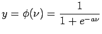
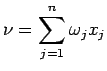
En donde 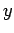 es la salida, 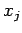 son las entradas, y 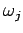 los pesos a ajustar.
Si empleamos como función de error a
 , el gradiente descendiente estará formado por los términos
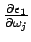 que se calcularían asi:
, el gradiente descendiente estará formado por los términos
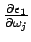 que se calcularían asi:
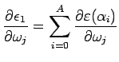
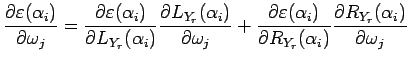
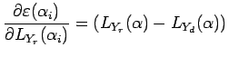
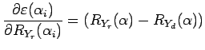
Como 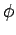 es una función monotonamente creciente, entonces
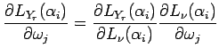
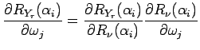
Pero las derivadas parciales respecto a dependen del signo de :
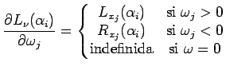
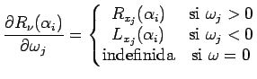
Estas discontinuidades plantean una seria dificultad para el método del gradiente descendiente. Este problema no se resuelve al tomar
 ni
ni
 .
.
Posibles alternativas de solución (no han sido evaluadas):
- Asegurar que
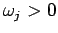. En este caso sólo podrian representarse funciones monótonamente crecientes.
- Asegurar que
y tomar el doble de entradas: por cada crear 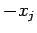
- Emplear alguna heurística para manipular el cambio de signo de
- Emplear Algoritmos Genéticos para encontrar los
Oscar Duarte
2005-10-17